Kho có bản đồ khuôn cho các nhóm màn đã có — Cài đặt sàn, Xác thực, trang tạm, trạng thái trống · lỗi · báo — và mỗi nhóm một khuôn có khe mà mọi màn của nhóm dựng qua
Vì sao làm
Chủ sản phẩm 31/10 chọn Quỹ hàng làm kho thử bản đồ khuôn dạng «khai trước khi lệch»; vo-va-ia.md §2 đã là bản đồ bằng lời, cần thành vật máy giữ trước màn dày đầu tiên (hàng 14)
Đã hứa
- AC-1 — Given kho sau hàng này, When bộ đọc bản đồ đọc `design/patterns/`, Then có đúng bốn tệp `xac-thuc`,
- AC-2 — Given một bản sao bản đồ bị làm hỏng đúng một chỗ, When bộ đọc đọc nó, Then nó báo lỗi gọi tên tệp và trường
- AC-3 — Given ba nhóm đơn vị màn (`xac-thuc`, `cai-dat-san`, `trang-tam`), When kiểm cây thật, Then mọi tệp khớp
- AC-4 — Given nhóm `trang-thai` (đơn vị phần tử), When kiểm cây thật, Then 0 lệch: chuông trống, trang tạm, lỗi thao tác
- AC-5 — Given lệnh `node packages/ui-lint/ban-do-khuon.mjs`, When chạy trên cây thật, Then in đúng một dòng mỗi nhóm
- AC-6 — Given người mẫu `hai-san@` ở Sàn mẫu B (sàn chỉ có một quản trị) và người mẫu `dau-chu@` không phải quản trị,
- AC-7 — Given các màn còn lại của bốn nhóm — đăng nhập (cả khi gõ sai mã), chọn sàn, một trang tạm, chuông trống — When
- AC-8 — Given bốn tệp bản đồ và `docs/design/vo-va-ia.md`, When một tác tử mới đọc chúng để dựng một màn của nhóm, Then
Thiết kế
docs/superpowers/specs/2026-10-31-ban-do-khuon-nhom-da-co-design.md
Quyết định
- 2026-10-31 · Máy · approach · S1 — Đã tra tri thức: Kho có bản đồ khuôn cho các nhóm màn đã có — Cài đặt sàn, Xác thực, trang tạm, trạng thái trống · lỗi · báo — và mỗi nhóm một khuôn có khe mà mọi màn của nhóm dựng quaKho đã khai tri_thuc — bước thiết kế tra trang trước khi chọn.
- 2026-10-31 · Máy · approach · S1 — Tệp bản đồ theo đúng chín khoá của finding kit §11.3, cộng một khoá «don_vi» (man | phan-tu) để nhóm trạng thái kiểm theo từng chỗ trình thay vì theo gốc cả tệp; tệp không khai khoá đọc là «man».Nhóm trạng thái không có tệp màn riêng — nó là phần tử nằm trong màn của nhóm khác, nên «dựng khuôn ở gốc tệp» không áp được.
- 2026-10-31 · Máy · approach · S1 — Khuôn đã có giữ nguyên chỗ (Khung ở (auth)/khung.tsx, Placeholder ở shell/placeholder.tsx); hai khuôn mới đặt ở settings/khung.tsx (MucCaiDat) và components/trang-thai.tsx (TrangThai, ghép Empty + Alert đã cài).Ô cơ hội và hàng lộ trình khai vùng đúng các thư mục ấy; dời khuôn đã có là đổi nhập ở mọi màn mà không thêm gì đo được.
- 2026-10-31 · Máy · approach · S1 — Bộ đọc frontmatter tự viết cho tập con YAML một dòng (chuỗi, [...], {...}, mảng các {...}); dòng ngoài tập con là lỗi có tên. Không thêm phụ thuộc.Thêm yaml hay js-yaml vào ui-lint là đổi package-lock — tệp chung của mọi dãy trong đợt; tập con đủ cho hình dạng §11.3.
- 2026-10-31 · Máy · approach · S1 — Nhóm trạng thái chỉ gồm trống · lỗi · báo; không khai khuôn chờ tải hay toast ở hàng này.Chưa màn nào có chờ tải hay gọi toast; khuôn của một nhóm sinh ra cùng màn đầu tiên dùng nó.
- 2026-10-31 · Máy · descope · S1 — bỏ design-pass — hàng không thêm màn hay luồng, chỉ gom màn có sẵn về khuôn; khung chụp trước/sau ở E6, E7Đổi trên màn giới hạn ở lớp bao của Người dùng và cách hiện lỗi; các màn khác giữ nguyên bề ngoài.
- 2026-10-31 · Máy · descope · S1 — KHÔNG làm răng giữ khuôn theo diff (lint cấm nhập, «chỉ sửa docs thì im») — đó là hàng 59; hàng này chỉ đo trạng thái cây.Hàng 59 (rang-giu-khuon) đứng trên hàng này và khai vùng packages/ui-lint cho răng.
- 2026-10-31 · Máy · descope · S1 — KHÔNG làm ảnh màn mới cạnh màn mẫu và luật «nhóm mới tạo mục bản đồ» — hàng 60.Hai việc ấy là QK3, QK4 của đợt, xếp ở hàng 60.
- 2026-10-31 · Máy · approach · S1 — Khuôn đã có giữ nguyên chỗ (Khung ở (auth)/khung.tsx, Placeholder ở shell/placeholder.tsx); khuôn mới đặt ở settings/khung.tsx (MucCaiDat) và components/trang-thai.tsx (TrangThai).Dời Khung hay Placeholder là đổi nhập ở mười bốn màn mà bộ đo không thêm gì: khuon.nhap trỏ chỗ nào bộ đọc cũng kiểm như nhau.
- 2026-10-31 · Máy · approach · S1 — TrangThai ghép Empty (shadcn) và Alert (ReUI) đã cài, thay vì chuyển thể khối đích empty-state-1/-2 của vo-va-ia; khối đích giữ nguyên trong vo-va-ia và chuyển thể vào chính TrangThai khi kho có khoá ReUI.Khối empty-state-* là khối Pro; kho chưa có khoá ReUI (ADR-0006 mục 7: khối Pro «khi chủ kho thêm khoá ReUI»), nên bậc 2 của thang dùng lại chưa đứng được — dừng ở bậc 5–6.
- 2026-10-31 · Máy · descope · S1 — bỏ design-pass — hàng không thêm màn hay luồng; bề ngoài mới duy nhất là khối báo (Alert đã cài) ở Người dùng, nhìn lần đầu ở ảnh E6 tại Cổng Bằng chứngKhung Cài đặt sàn giữ nguyên lớp và độ rộng của Người dùng hiện có; các màn khác không đổi tệp hiển thị, chữ ghim ở E7.
- 2026-10-31 · Máy · descope · S1 — bỏ design-pass — hàng không thêm màn hay luồng; bề ngoài mới duy nhất là khối báo (Alert đã cài) ở Người dùng, chủ kho xem ở ảnh E6 tại Cổng Bằng chứngChủ kho khai chỉ quyết ở cổng và việc đảo rẻ thì máy làm rồi báo; đổi khối báo là sửa một tệp TrangThai, ảnh E6 có sẵn ở Cổng Bằng chứng.
- 2026-10-31 · Người · seal · gate1 —
- 2026-10-31 · Máy · fix · S4-r1 — Bộ kiểm nhóm màn đi vào cả hai nhánh của lệnh trả có điều kiện (a ? b : c) và vế của &&, ||, ?? trước khi so gốc với khuôn; thêm hai ca đỏ cho hai dạng ấy.Phản biện lượt 1 (E3, AC-3) dựng lại được một <main min-h-svh> trong nhánh của toán tử ba ngôi mà bộ kiểm vẫn báo 0 lệch — trái lời hứa «mọi JSX trả về có gốc là khuôn».
- 2026-10-31 · Máy · revisit · gate2 — Ngoài-1: ghi Known limitsmáy tự định tuyến theo đề xuất S4 «known-limits» — kho bật feature_loop.ngoai_n_tu_dinh_tuyen
- 2026-10-31 · Máy · revisit · gate2 — Ngoài-2: ghi Known limitsmáy tự định tuyến theo đề xuất S4 «known-limits» — kho bật feature_loop.ngoai_n_tu_dinh_tuyen
- 2026-10-31 · Máy · revisit · gate2 — Ngoài-3: ghi Known limitsmáy tự định tuyến theo đề xuất S4 «known-limits» — kho bật feature_loop.ngoai_n_tu_dinh_tuyen
- 2026-10-31 · Máy · revisit · gate2 — Ngoài-4: ghi Known limitsmáy tự định tuyến theo đề xuất S4 «known-limits» — kho bật feature_loop.ngoai_n_tu_dinh_tuyen
- 2026-10-31 · Máy · revisit · gate2 — Ngoài-6: ghi Known limitsmáy tự định tuyến theo đề xuất S4 «known-limits» — kho bật feature_loop.ngoai_n_tu_dinh_tuyen
- 2026-10-31 · Máy · fix · S3 — Dòng tóm tắt của nhóm trạng thái đếm «chỗ» thay «tệp»; AC-5 ghi thêm vế ấy.Nhóm trạng thái kiểm theo phần tử (don_vi: phan-tu), nên con số là số chỗ dựng TrangThai (5), không phải số tệp — E5 đã nói N là số chỗ.
Bằng chứng
Các eval
| Eval | Tiêu chí | Loại | Verdict | run_id | verified_at |
|---|---|---|---|---|---|
| E1 | AC-1 | test | PASS | minted-ban-do-khuon-nhom-da-co-E1-r2 | 2026-10-31T09:16:20Z |
| E2 | AC-2 | test | PASS | minted-ban-do-khuon-nhom-da-co-E2-r2 | 2026-10-31T09:16:20Z |
| E3 | AC-3 | test | PASS | minted-ban-do-khuon-nhom-da-co-E3-r2 | 2026-10-31T09:16:20Z |
| E4 | AC-4 | test | PASS | minted-ban-do-khuon-nhom-da-co-E4-r2 | 2026-10-31T09:16:20Z |
| E5 | AC-5 | test | PASS | minted-ban-do-khuon-nhom-da-co-E5-r2 | 2026-10-31T09:16:20Z |
| E6 | AC-6 | ui-check | PASS | E6-20261031 | 2026-10-31T09:07:51Z |
| E6b | AC-6 | test | PASS | minted-ban-do-khuon-nhom-da-co-E6b-r1 | 2026-10-31T09:07:51Z |
| E7 | AC-7 | ui-check | PASS | minted-ban-do-khuon-nhom-da-co-E7-r1 | 2026-10-31T09:07:51Z |
| E8 | AC-8 | judgment | PASS | — | — |
Chi tiết từng eval
PASS E1 · test
AC-1: Given kho sau hàng này, When bộ đọc bản đồ đọc `design/patterns/`, Then có đúng bốn tệp `xac-thuc`,
ℹ duration_ms 2213.236 __EXIT=0
PASS E2 · test
AC-2: Given một bản sao bản đồ bị làm hỏng đúng một chỗ, When bộ đọc đọc nó, Then nó báo lỗi gọi tên tệp và trường
ℹ duration_ms 2213.236 __EXIT=0
PASS E3 · test
AC-3: Given ba nhóm đơn vị màn (`xac-thuc`, `cai-dat-san`, `trang-tam`), When kiểm cây thật, Then mọi tệp khớp
ℹ duration_ms 2213.236 __EXIT=0
PASS E4 · test
AC-4: Given nhóm `trang-thai` (đơn vị phần tử), When kiểm cây thật, Then 0 lệch: chuông trống, trang tạm, lỗi thao tác
ℹ duration_ms 2213.236 __EXIT=0
PASS E5 · test
AC-5: Given lệnh `node packages/ui-lint/ban-do-khuon.mjs`, When chạy trên cây thật, Then in đúng một dòng mỗi nhóm
ℹ duration_ms 2213.236 __EXIT=0
PASS E6 · ui-check
AC-6: Given người mẫu `hai-san@` ở Sàn mẫu B (sàn chỉ có một quản trị) và người mẫu `dau-chu@` không phải quản trị,
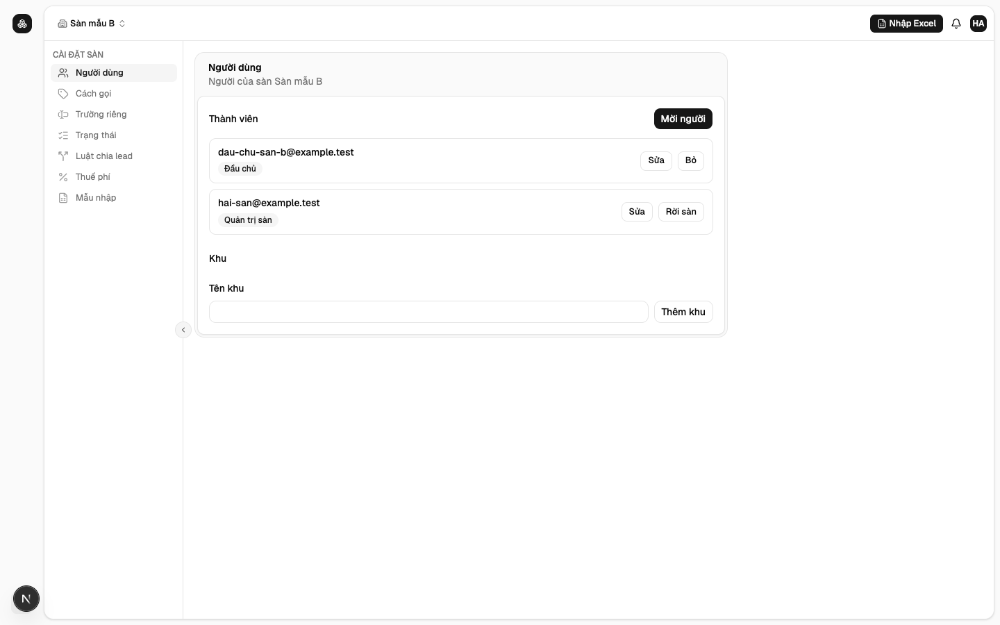


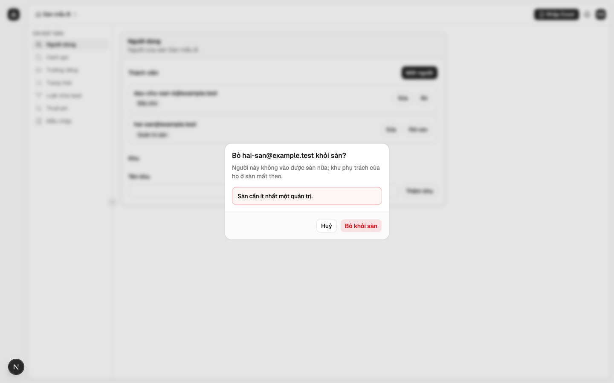


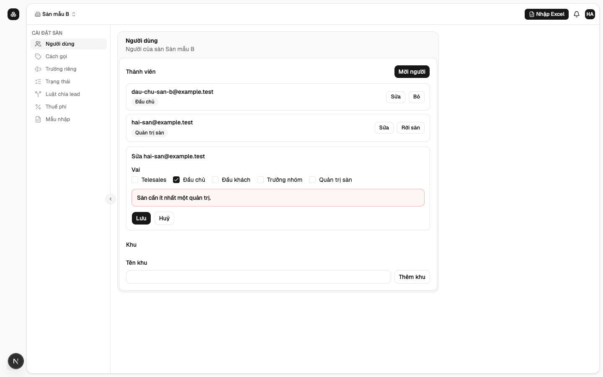

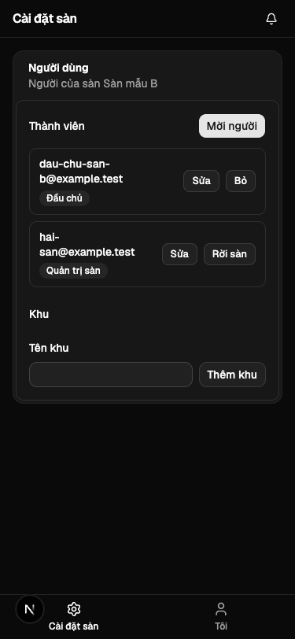
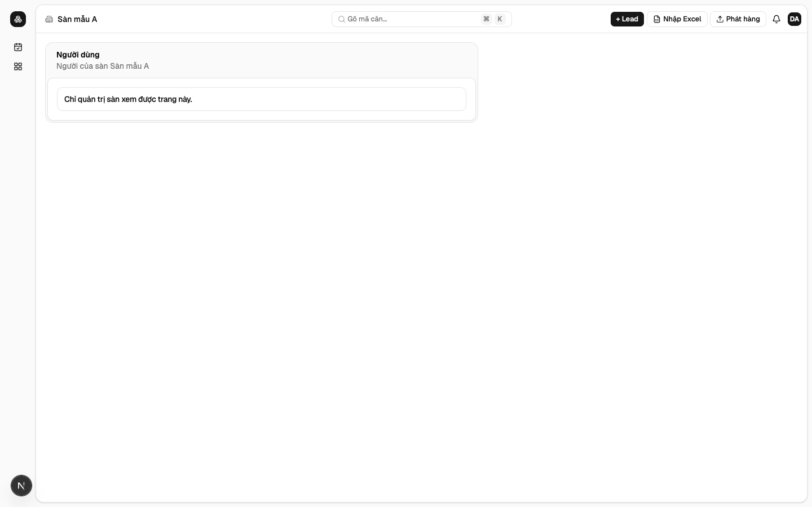
PASS E6b · test
AC-6: Given người mẫu `hai-san@` ở Sàn mẫu B (sàn chỉ có một quản trị) và người mẫu `dau-chu@` không phải quản trị,
PASS E7 · ui-check
AC-7: Given các màn còn lại của bốn nhóm — đăng nhập (cả khi gõ sai mã), chọn sàn, một trang tạm, chuông trống — When
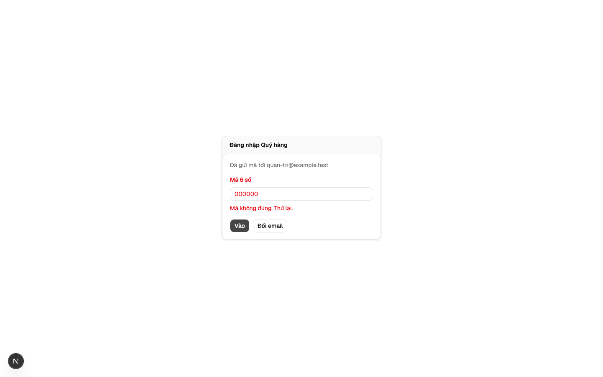
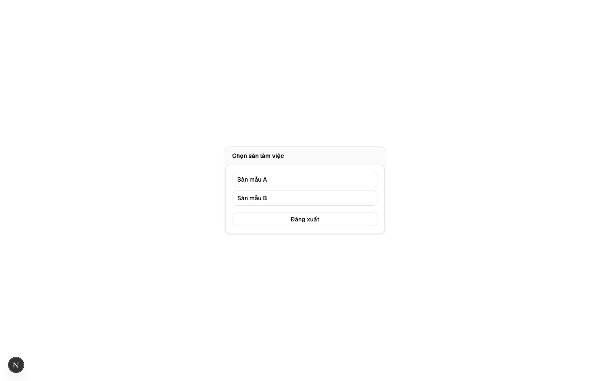
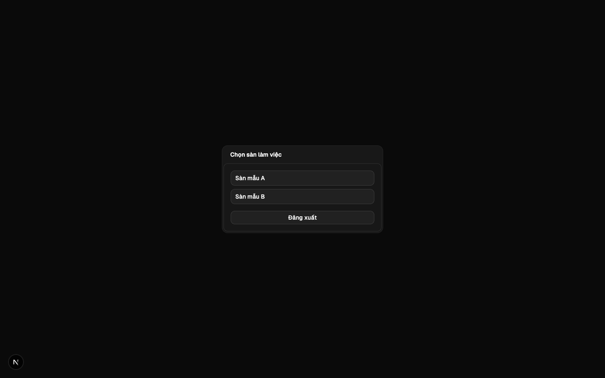
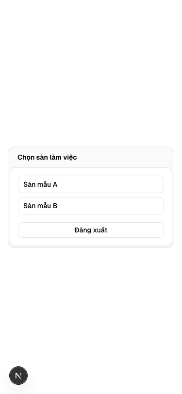
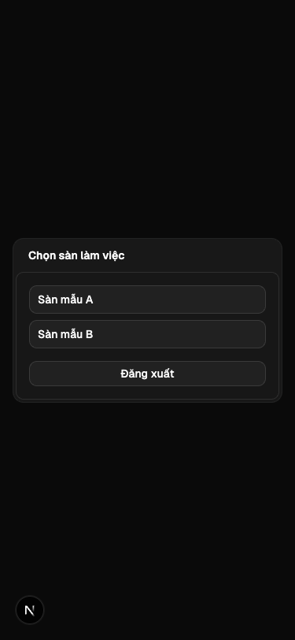
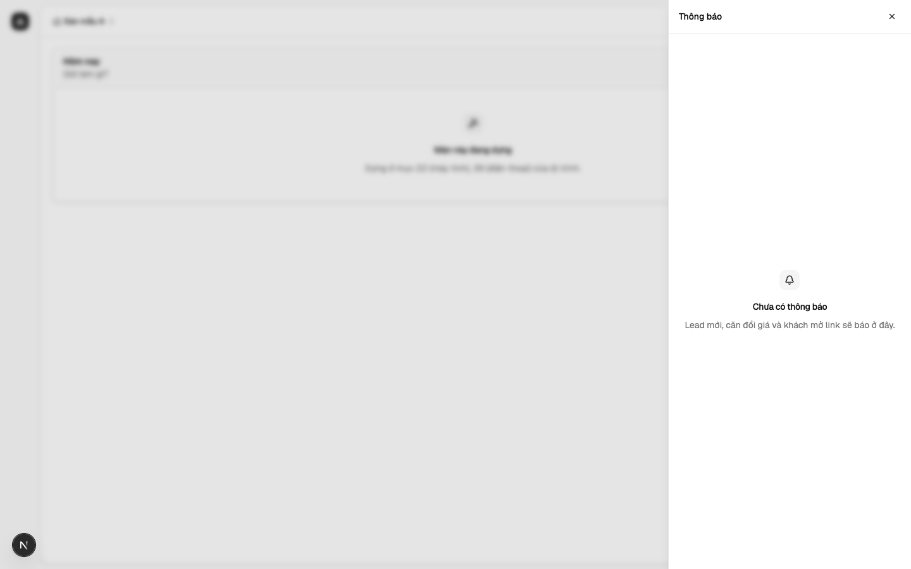
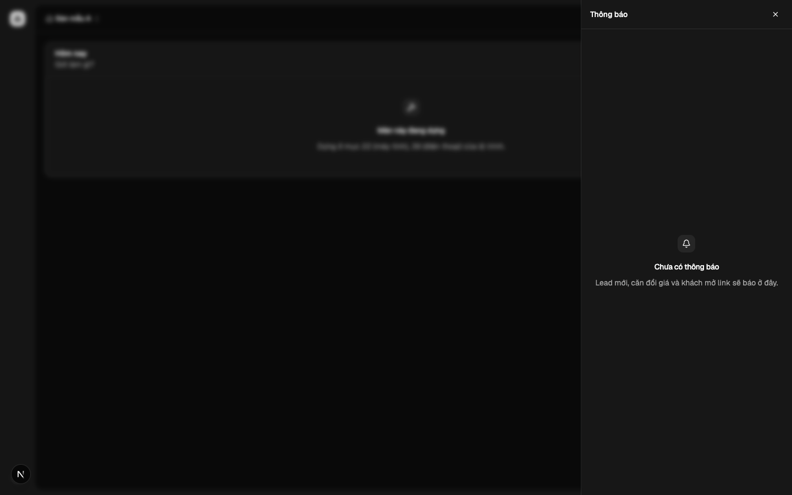

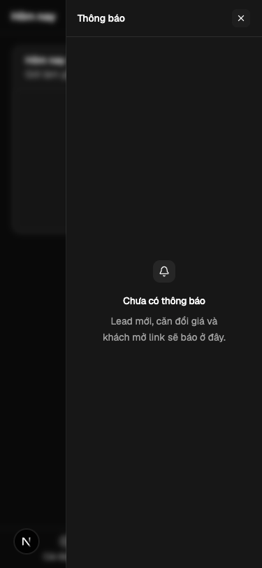
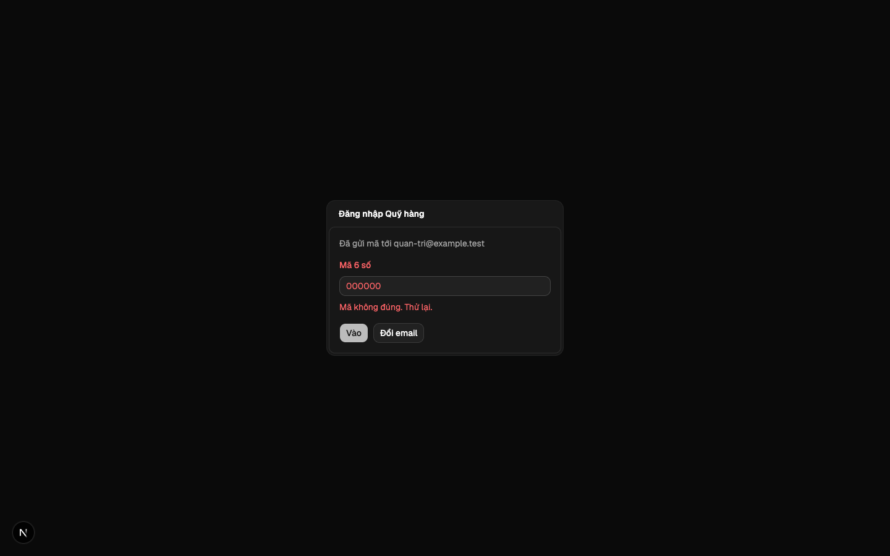
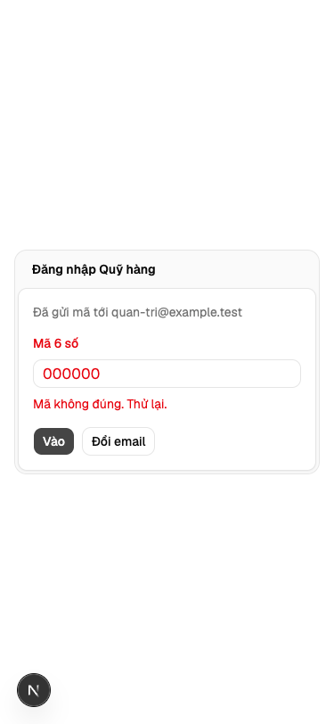
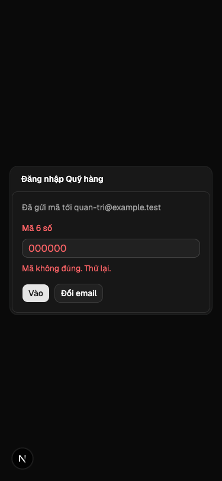
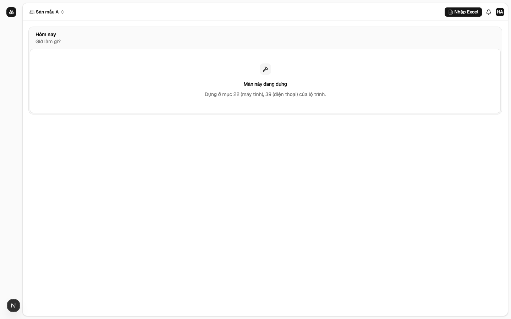
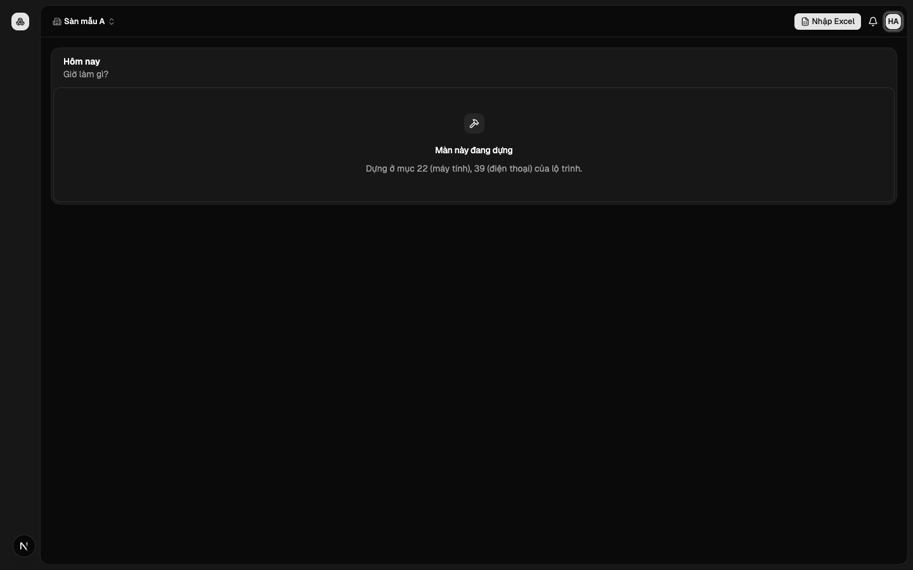

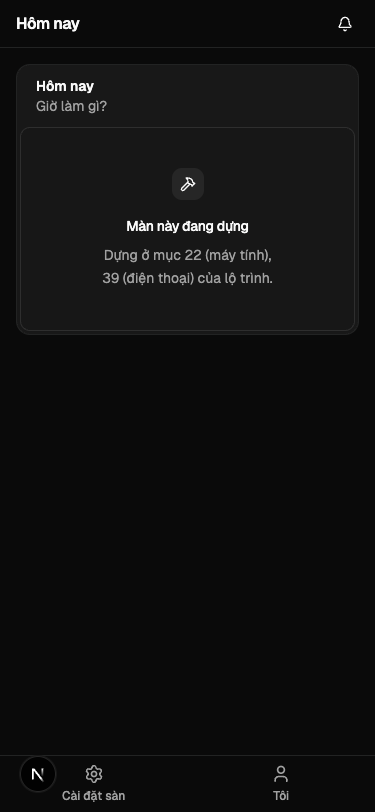
PASS E8 · judgment
AC-8: Given bốn tệp bản đồ và `docs/design/vo-va-ia.md`, When một tác tử mới đọc chúng để dựng một màn của nhóm, Then
Phán đoán: Ba góc nhìn đều cho PASS. Cả bốn tệp khuôn có «Dùng khi» và «Không dùng»; mỗi mã trong khoá `luat` có đúng một câu luật làm theo được; hai ngoại lệ duy nhất (cai-dat-san) đều có `ly_do`; vo-va-ia.md §2 trỏ sang `design/patterns/`, kể tên đủ bốn tệp và phân vai bản đồ máy đọc với bảng giải thích.
Eval không phân biệt (Analyst)
Vòng verify
- Round 1: mọi eval đạt; một phát hiện trong hợp đồng (bộ kiểm trang bỏ qua lệnh trả có điều kiện nên gốc sai có thể lọt, AC-3) → trả về sửa.
- Round 2: sửa bộ kiểm khuôn đi vào lệnh trả có điều kiện (commit 2c07e3b); E1-E5 và sáu lệnh suite chạy lại và đạt; E6, E6b, E7 giữ nguyên từ round 1 (delta không chạm paths); E8 panel giữ đề xuất PASS.
Tài nguyên
| Khối | Tác tử | Token đầu ra |
|---|---|---|
| S4 round 1 | 21 | 94.772 |
| S4 round 2 | 16 | 36.069 |
2 lượt chấm · tổng 130.841 token
Giới hạn và ngoài hợp đồng
- Răng giữ khuôn: lint cấm nhập theo vùng, bài quét theo diff, «chỉ sửa docs thì im» — hàng 59.
- Ảnh màn mới cạnh màn mẫu ở bước thiết kế; luật «màn đầu của nhóm mới tạo mục bản đồ» trong `vo-va-ia.md` và skill `quy-hang-ui` — hàng 60.
- Khuôn cho nhóm chưa có màn (bảng hàng, hồ sơ căn, Hôm nay, ô nhận lead, cuộc gọi…), cho chờ tải và toast.
- Chuyển thể khối đích `auth-15` và `solution-users-8` — việc riêng (ADR-0005, ADR-0006).
Giao
chưa ghi quan sát production
Giá trị
- Câu hỏi phép đo trả lời: [đề xuất] đã đạt «Mỗi nhóm một tệp design/patterns/<nhóm>.md đủ trường theo finding kit §11.3 và đọc được bằng máy; ngoại lệ nào cũng có lý do; mọi màn hiện có của bốn nhóm dựng khuôn ở gốc» chưa? — chưa đo
- Kết quả nào là SỐNG: [đề xuất] Mỗi nhóm một tệp design/patterns/<nhóm>.md đủ trường theo finding kit §11.3 và đọc được bằng máy; ngoại lệ nào cũng có lý do; mọi màn hiện có của bốn nhóm dựng khuôn ở gốc — chưa đo
- Kết quả nào là CHẾT: [đề xuất] chưa đạt «Mỗi nhóm một tệp design/patterns/<nhóm>.md đủ trường theo finding kit §11.3 và đọc được bằng máy; ngoại lệ nào cũng có lý do; mọi màn hiện có của bốn nhóm dựng khuôn ở gốc» khi hết timebox — chưa đo
- Timebox: … — chưa đo